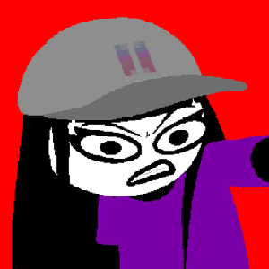

Recommendations for works outside the Homestuck universe.

Psycholonials
While in communication with supernatural forces, two influencers launch a daring new social media brand. After getting in trouble with the law, they must consider how to navigate stardom as scrutiny of their project intensifies. The visual novel begins on April 20th, 2020, taking place on an island off the coast of New England.